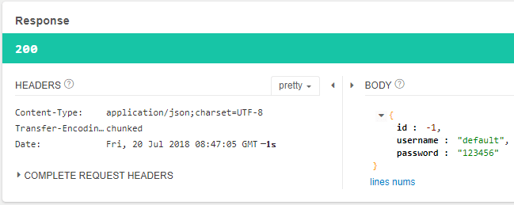

前面我们分别通过Spring Cloud Ribbon和Spring Cloud Hystrix实现了客户端负载均衡和服务容错，而Spring Cloud Feign不但整合了这两者的功能，而且还提供了一种比Ribbon更简单的服务调用方式 ——— 声明式服务调用。在Spring Cloud Feign中编写服务调用代码非常简单，几乎可以直接将服务提供者的代码复制过来，改为接口即可，下面通过例子来演示这个特性。
搭建Feign Consumer
创建一个新的Spring Boot应用，版本为1.5.13.RELEASE，artifactId改为Feign-Consumer，并引入下面这些依赖：
1 | <dependencyManagement> |
除了spring-cloud-starter-feign依赖外，我们还引入了spring-cloud-starter-eureka，目的是为了从Eureka服务注册中心获取服务。
在Spring Boot的入口类中加入@EnableFeignClients和@EnableDiscoveryClient注解，用于开启Spring Cloud Feign和服务注册与发现：
1 |
|
在前面几节中，我们曾在服务提供者Eureka-Client中定义了一个UserController，代码如下所示：
1 |
|
在Spring Cloud Ribbon中访问这些服务需要通过RestTemplate对象来实现，并且参数绑定的过程也比较繁琐。Spring Cloud Feign对这个步骤进行了进一步的封装，在Feign Consumer中调用这些服务只需要定义一个UserService接口，然后将UserController中的代码复制过并将方法体去掉即可，如：
1 | ("Server-Provider") |
对比Feign Consumer中的UserService和Eureka-Client中UserController代码，两者是不是很相似？
在UserService中，我们通过@FeignClient("Server-Provider")注解来获取我们需要的服务，其中Server-Provider不区分大小写。需要注意的是，在定义各参数绑定时，@RequestParam、@RequestHeader等可 以指定参数名称的注解，它们的value千万不能少。在SpringMVC 程序中，这些注解会根据参数名来作为默认值，但是在Feign中绑定参数必须通过value属性来指明具体的参数名，不然会抛出illegalStateException异常，value 属性不能为空。
接下来我们在Feign Consumer中定义一个TestController，来调用UserService中定义的服务：
1 |
|
最后配置一下application.yml：
1 | server: |
上面配置指定了Eureka服务注册中心的地址，用于获取服务。
最后我们分别启动以下服务：
启动Eureka-Server集群，端口号为8080和8081；
启动两个Eureka-Client，端口号为8082和8083；
启动Feign-Consumer，端口号为9000。
多次访问http://localhost:9000/user/1服务，观察8082和8083服务的控制台：
1 | 2018-06-10 14:27:38.105 INFO 10120 --- [nio-8082-exec-8] c.e.demo.controller.UserController : 获取用户id为 1的信息 |
使用Feign实现的消费者，依然是利用Ribbon维护了针对Seriver-Provider的服务列表信息，并且通过轮询实现了客户端负载均衡。而与Ribbon不同的是，通过Feign我们只需定义服务绑定接口，以声明式的方法，优雅而简单地实现了服务调用。
Ribbon相关配置
Spring Cloud Feign内部的客户端负载均衡是通过Ribbon来实现的，所以在Spring Cloud Feign中配置Ribbon，和之前在Spring Cloud Ribbon客户端负载均衡中介绍的Spring Cloud Ribbon配置一样，这里不再赘述。
Hystrix相关配置
要在Spring Cloud Feign中开启Hystrix，可以在yml中添加如下配置：
1 | feign: |
剩下的Hystrix配置和之前在Spring Cloud Hystrix服务容错中介绍的Hystrix属性配置一样。
在Spring Cloud Feign中配置服务降级和在Spring Cloud Hystrix中配置服务降级区别很大，下面具体来看下怎么在Feign-Consumer中配置服务降级。
定义一个用于处理服务降级方法的类UserServiceFallback，并且实现上面定义的UserService接口：
1 |
|
在UserService的中通过@FeignClient注解的fallback属性来指定对应的服务降级实现类:
1 | (value = "Server-Provider", fallback = UserServiceFallback.class) |
重启Feign-Consumer，并关闭Eureka Client服务，访问http://localhost:9000/user/1，由于Eureka-Client服务提供者都关闭了，所以这里会直接触发服务降级，响应结果如下：

可看到响应信息为服务降级方法中的返回结果。
其余Feign配置
除了Ribbon和Hystrix配置之外，Feign也有一些自个儿的配置。
请求压缩
Spring Cloud Feign支持对请求与响应进行GZIP压缩，以减少通信过程中的性能损耗：
1 | feign: |
同时，我们还能对请求压缩做一些更细致的设置，比如下面的配置内容指定了压缩的请求数据类型，并设置了请求压缩的大小下限，只有超过这个大小的请求才会对其进行压缩:
1 | feign: |
日志配置
Feign提供了日志打印的功能，Feign的日志级别分为四种：
NONE: 不记录任何信息。BASIC: 仅记录请求方法、URL以及响应状态码和执行时间。HEADERS: 除了记录BASIC级别的信息之外，还会记录请求和响应的头信息。FULL: 记录所有请求与响应的明细，包括头信息、请求体、元数据等。
日志级别默认为NONE，要改变级别可以在入口类中定义一个日志配置Bean：
1 |
|
然后在yml中配置Feign客户端的日志级别为debug，Feign日志记录仅响应debug级别：
1 | logging: |
1 | [UserService#get] <--- HTTP/1.1 200 (506ms) |